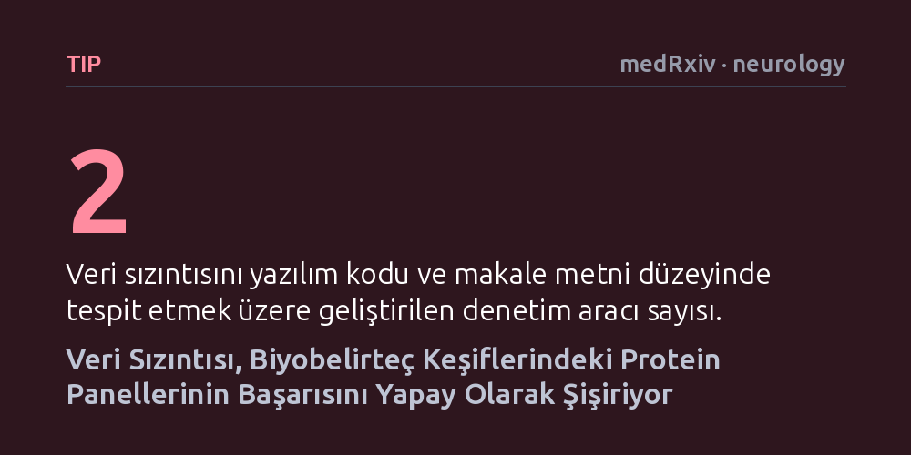

TIP · medRxiv · neurology · 2026-09-08
Araştırmacılar, simülasyonlar ve gerçek proteomik veriler kullanarak biyobelirteç keşif süreçlerindeki yaygın veri sızıntısının modellerin başarımını nasıl etkilediğini inceledi. Standart analiz yöntemlerinin veri sızıntısına açık olduğu, bunun da başarı tahminlerini yapay biçimde şişirerek yanıltıcı sonuçlar doğurduğu belirlendi.
Hastalıkları erken teşhis ettiği iddia edilen protein testlerinin laboratuvardaki yüksek başarı oranlarının, klinik uygulamaya taşındığında neden sıklıkla düştüğünü açıklıyor.

Tıpta erken teşhis, özellikle nörodejeneratif hastalıklarda tedavi şansını artıran en kritik unsurların başında gelir. Son yıllarda kandaki veya beyin-omurilik sıvısındaki onlarca proteini aynı anda tarayarak hastalıkları erkenden haber verdiği öne sürülen protein panelleri büyük bir ilgi görmektedir. Ancak laboratuvarda geliştirilen ve yüksek doğruluk oranlarına ulaştığı bildirilen bu biyobelirteçlerin önemli bir kısmı, gerçek klinik ortamda yeni hastalar üzerinde denendiğinde bekleneni verememektedir.
Bu durumun ardındaki en sinsi etkenlerden biri, istatistiksel modelleme süreçlerinde sıklıkla gözden kaçan veri sızıntısı olgusudur. Bir model eğitilirken test verisinden modele geçmemesi gereken bilgilerin analiz sürecine sızması, kâğıt üzerinde kusursuz ama pratikte işe yaramayan yanıltıcı modeller üretmektedir. Bu çalışma, tıbbi araştırmalardaki bu metodolojik zafiyetin boyutlarını ve sonuçlarını ortaya koymaktadır.
Araştırmacılar, bu problemin istisnai bir durum mu yoksa yaygın analiz iş akışlarının yapısal bir kusuru mu olduğunu anlamak için kapsamlı bir inceleme yürüttü. Çalışma kapsamında hem kontrollü matematiksel simülasyonlar oluşturuldu hem de nörodejenerasyon araştırmalarında başvurulan gerçek proteomik veri setleri modellendi. Araştırma ekibi, literatürde protein panelleri oluşturulurken yaygın biçimde uygulanan veri işleme ve özellik seçimi adımlarını mercek altına aldı.
Ekip yalnızca sorunun varlığını tespit etmekle kalmadı; aynı zamanda bu tür metodolojik hataların önüne geçebilmek için iki farklı denetim aracı tasarladı. Bu araçlardan ilki araştırmacıların yazdığı analiz kodlarını doğrudan tarayarak veri sızıntısına yol açan teknik adımları yakalamayı hedeflerken, ikincisi yayımlanan bilimsel makalelerin metinlerini tarayarak raporlama eksikliklerini ve olası metodolojik sızıntıları belirlemeyi amaçlamaktadır.
Elde edilen bulgular, biyobelirteç keşif çalışmalarında standart olarak uygulanan analiz hatlarının veri sızıntısına karşı son derece savunmasız olduğunu net bir şekilde gösterdi. Veri sızıntısının gerçekleştiği durumlarda, protein panellerinin hastalıkları ayırt etme başarısının yapay biçimde şiştiği ve modellerin gerçekte olduğundan çok daha başarılı göründüğü anlaşıldı. Yani kâğıt üzerindeki yüksek başarım, proteinlerin gerçek biyolojik gücünden değil, analizin kendi içindeki sızıntı hatasından kaynaklanıyordu.
Bunun doğrudan sonucu olarak geliştirilen modellerin genellenebilirliğinin ciddi biçimde düştüğü ve yanlış pozitif sonuçların aşırı derecede arttığı saptandı. Gerçekte tanısal değeri bulunmayan protein kombinasyonları, sızan veriler yüzünden güçlü birer biyobelirteç gibi raporlanmaktaydı. Bu durum, akademik literatürde yanıltıcı bir iyimserlik yaratarak sonraki klinik araştırmalarda kaynakların boşa harcanmasına yol açmaktadır.
Bu çalışma, biyomedikal alanda makine öğrenimi ve veri analitiği kullanan araştırmacılar için doğrudan bir yöntem uyarısı niteliğindedir. Bir protein panelinin klinik potansiyeli, yalnızca bildirilen yüksek başarım sayılarıyla ölçülemez; analiz sürecinin ne kadar titiz ve sızıntısız kurulduğu da en az biyolojik mekanizmalar kadar belirleyicidir. Veri sızıntısının yaygınlığı, daha önce yayımlanmış birçok biyobelirteç çalışmasının sonuçlarına da temkinli yaklaşılması gerektiğini göstermektedir.
Yazarların geliştirdiği iki denetim aracı, gelecekteki çalışmaların daha şeffaf, titiz ve tekrarlanabilir bir temele oturması için somut bir yol sunmaktadır. Kod ve makale düzeyinde yapılacak bağımsız kontroller, henüz erken aşamadaki hataları yakalayarak sağlık alanında yalnızca gerçekten güvenilir olan protein panellerinin ilerlemesine imkân tanıyacaktır.